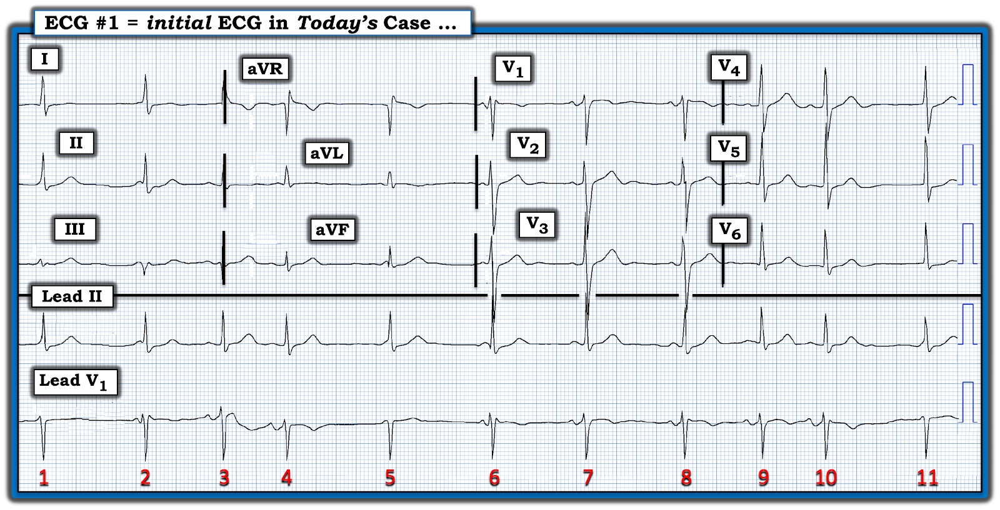
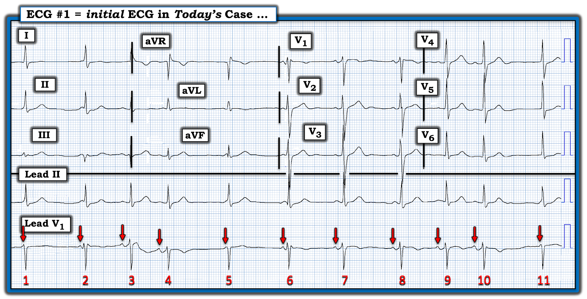
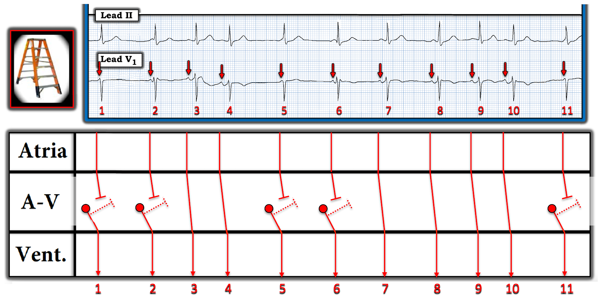

ECG Blog #414 — Blốc AV loại gì?
Tôi được gửi điện tâm đồ ở Hình-1 — mà không kèm theo bất kỳ bệnh sử nào.
CÂU HỎI:
- Ở Hình-1 có loại blốc AV nào?


Cách tiếp cận CỦA TÔI với bản ghi hôm nay:
Như mọi khi — tôi thích bắt đầu đánh giá bằng một cái nhìn nhanh vào các dải nhịp chuyển đạo dài ở cuối bản ghi. Theo Cách tiếp cận Ps, Qs, 3R (mà tôi đã ôn lại trong ECG Blog #185):
- Có sóng P — và thấy rõ nhất ở chuyển đạo V1.
- Phức bộ QRS hẹp ở cả 12 chuyển đạo.
- Nhịp không đều (Regular). Tần số (Rate) thất thay đổi.
- Thông số thứ 5 của Cách tiếp cận Ps,Qs,3R — là chữ R thứ 3, tức là “liên quan (Related)” — hay xác định xem sóng P có (hay không có) liên quan với các phức bộ QRS kế cận. Thông số cuối cùng này được đánh giá tốt nhất bằng cách đánh dấu các sóng P trên dải nhịp chuyển đạo V1 dài (mà tôi đã làm ở Hình-2).
CÂU HỎI:
Hãy NHÌN vào Hình-2 — trong đó các mũi tên ĐỎ đánh dấu sóng P.
- BẠN sẽ mô tả mức độ đều (hay không đều) của sóng P trong nhịp hôm nay như thế nào?
- Có phải tất cả sóng P đều xuất phát từ nút xoang (SA)?
- Có phải tất cả sóng P đều được dẫn truyền xuống thất?


VÌ SAO sóng P lại không đều đến vậy ở Hình-2?
Giờ đây khi đã đánh dấu tất cả sóng P ở Hình-2 bằng mũi tên ĐỎ — Chẳng phải việc nhận ra tính không đều hoàn toàn của nhịp nhĩ đã dễ hơn nhiều sao?
- Phần lớn các trường hợp — chuyển đạo II là nơi cho thấy rõ nhất sóng P xoang. Tuy vậy — điều này không đúng với nhịp hôm nay, vì ở Hình-2 chuyển đạo V1 cho thấy hoạt động nhĩ ổn định hơn.
Những gì chúng ta biết về nhịp này ...
- Ít nhất một số sóng P ở Hình-2 có vẻ là sóng P xoang được dẫn truyền xuống thất — cụ thể là các sóng P đứng trước các nhát #3,7,8 và 9. Tôi nói vậy vì mỗi nhát này đều đi sau một sóng P trông giống nhau với khoảng PR hằng định và bình thường.
- Các sóng P khác rõ ràng không được dẫn truyền xuống thất — vì khoảng PR trước các nhát #1,2,5,6 và 11 có vẻ quá ngắn để dẫn truyền. Việc các khoảng R-R đứng trước những nhát này gần như bằng nhau (tức là dài ~5 ô lớn) — gợi ý rằng các nhát #1,2,5,6 và 11 đều là nhát thoát bộ nối với tần số thoát nút AV phù hợp là ~60/phút (tức là nằm trong khoảng 40-60/phút thường gặp của nhịp thoát bộ nối).
Tôi kém chắc chắn hơn về nguồn gốc của các nhát #4 và 10 — vì những nhát này đến sớm hơn nhiều so với dự kiến.
- Thời điểm xuất hiện của các nhát #4 và 10 gợi ý đây có thể là PAC (ngoại tâm thu nhĩ — Premature Atrial Contractions). Hoặc — cũng có thể mỗi sóng P có mũi tên ĐỎ ở Hình-2 đều là sóng P xoang, xuất hiện trong bối cảnh một loạn nhịp xoang rất rõ rệt.
- PAC thường có hình dạng sóng P khác với sóng P dẫn truyền từ xoang, tùy vị trí ổ PAC gần hay xa nút xoang (SA). Ví dụ, PAC phát sinh từ vị trí rất gần nút SA — có thể trông rất giống các nhát dẫn truyền từ xoang ở hầu hết (nếu không nói là tất cả) 12 chuyển đạo.
- Cần cân nhắc song song với những điều trên về khả năng hình dạng sóng P thay đổi — là thực tế lâm sàng rằng một mức độ biến đổi nội tại nhất định về hình dạng sóng P là thường gặp trong nhịp xoang (Xem Pearl #6 trong ECG Blog #413).
- ĐIỀU CỐT LÕI: Tôi không cho rằng có thể xác định chắc chắn căn nguyên của các nhát #4 và 10 từ Hình-2. Đơn giản là từ một bản ghi duy nhất này, chúng ta không thể biết liệu sự thay đổi nhẹ về hình dạng sóng P thấy ở chuyển đạo II (ở chuyển đạo V1 thì không rõ bằng) là "thật" hay chỉ là biến đổi bình thường về hình dạng sóng P vẫn gặp trong nhịp xoang.
Tổng Hợp Lại Tất cả — bằng một Giản đồ bậc thang:
Một bức hình "đáng giá 1,000 lời" — vì vậy minh họa phần mô tả trên bằng một giản đồ bậc thang (laddergram) sẽ dễ hơn.
- Như tôi đã nêu ở trên — từ một bản ghi duy nhất này, không thể xác định chắc chắn liệu các nhát #4 và 10 là PAC — hay là thành phần của một loạn nhịp xoang rõ rệt. Để cho đơn giản (tức là không phải giả định thêm yếu tố có cả PAC trong nhịp hôm nay) — tôi giả định rằng tất cả sóng P có mũi tên ĐỎ đều là xung động xoang (tức là các nhát #3,7,8,9 — cũng là các nhát dẫn truyền từ xoang).
- Các nhát #1,2,5,6 và 11 là nhát thoát bộ nối với tần số thoát phù hợp là ~60/phút (các sóng P xuất hiện ngay trước những nhát này có khoảng PR quá ngắn để dẫn truyền).
- LƯU Ý: Có phân ly nhĩ thất thoáng qua trong nhịp hôm nay — dưới dạng các sóng P xoang không liên quan với các phức bộ QRS kế cận (tức là các sóng P trước các nhát #1,2,5,6,11 có khoảng PR quá ngắn để dẫn truyền). Như đã bàn chi tiết trong ECG Blog #192 — có 3 Nguyên nhân gây Phân ly nhĩ thất: i) Do "mặc định" (default); ii) Do "chiếm quyền" (usurpation); và, iii) Do hậu quả của blốc AV. Bất kể là có loạn nhịp xoang rõ rệt hay có những khoảng ngưng ngắn sau PAC — nguyên nhân của phân ly nhĩ thất thoáng qua thấy trong nhịp hôm nay là một dạng "mặc định" — vì lý do các nhát thoát bộ nối #2,5,6 và 11 xuất hiện là do các khoảng R-R hơi dài hơn đứng trước mỗi nhát này.
- NHƯNG — không có bằng chứng nào của blốc AV trên bản ghi hôm nay — vì chúng ta không hề thấy sóng P xoang đúng lúc mà lẽ ra phải được dẫn truyền nhưng lại không dẫn truyền.
- T.B. (P.S.) (Vượt ra ngoài phần cốt lõi): Chúng tôi không được cung cấp bệnh sử nào trong ca hôm nay. Một cách giải thích khác có thể có cho nhịp hôm nay là trương lực phế vị tăng rõ rệt (như trong ca được trình bày ở ECG Blog #61) — điều có thể gây ra không chỉ loạn nhịp xoang rõ rệt — mà còn cả sự thay đổi phần nào khoảng PR của các nhát dẫn truyền từ xoang (tức là có vẻ khoảng PR trước các nhát được dẫn truyền #4 và 10 hơi dài hơn khoảng PR của các nhát dẫn truyền từ xoang khác).


==========================================
Lời cảm ơn: Tôi xin cảm ơn Danilo Franco (đến từ Ý) về ca bệnh và bản ghi này.
==========================================

==============================
Các bài ECG Blog liên quan đến ca hôm nay:
- ECG Blog #185 — Ôn lại Hệ thống Đọc Nhịp của tôi, theo Cách tiếp cận Ps, Qs & 3R.
- ECG Blog #188 — Ôn lại cách đọc và vẽ Giản đồ bậc thang (kèm LINK tới hơn 90 ca có giản đồ bậc thang — nhiều ca có minh họa tuần tự từng bước).
- ECG Blog #192 — 3 Nguyên nhân gây Phân ly nhĩ thất.
- ECG Blog #191 — Ôn lại sự khác biệt giữa Phân ly nhĩ thất và Blốc AV hoàn toàn.
- ECG Blog #389 — ECG Blog #373 — và ECG Blog #344 — để ôn lại một số ca minh họa "giải quyết bài toán blốc AV".
- ECG Blog #267 — Ôn lại, bằng các giản đồ bậc thang từng bước, việc suy luận một ca Mobitz I có nhiều hơn một cách giải thích khả dĩ.
- ECG Blog #61 — Blốc do cường phế vị.